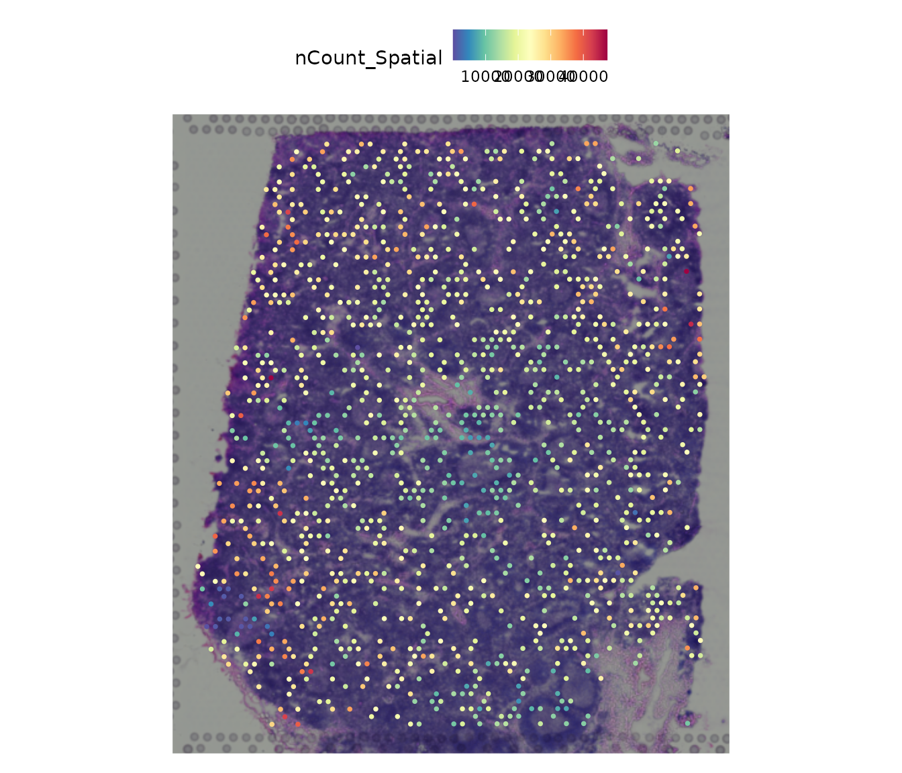

AEGIS Demo Human Lymph Node
Source:vignettes/AEGIS-demo-human-lymph-node.Rmd
AEGIS-demo-human-lymph-node.RmdDemo data source
This vignette uses the built-in Human Lymph Node example object
(aegis_example) so it can render in CI, pkgdown, and source
builds.
data("aegis_example", package = "AEGIS")
seu <- aegis_example
seu
#> An object of class Seurat
#> 36601 features across 1200 samples within 1 assay
#> Active assay: Spatial (36601 features, 0 variable features)
#> 2 layers present: counts, data
#> 1 spatial field of view present: slice1Optional: load directly from authoritative raw files
If you are in the repository root and have these raw files available:
V1_Human_Lymph_Node_filtered_feature_bc_matrix.h5V1_Human_Lymph_Node_spatial.tar.gzV1_Human_Lymph_Node_metrics_summary.csv
then you can load from disk with:
seu <- load_10x_lymphnode(data_dir = ".")Spatial transcriptomics slice example
Seurat::SpatialFeaturePlot(seu, features = "nCount_Spatial")
Simulate deconvolution and run AEGIS
deconv <- simulate_deconv_results(seu, seed = 2026)
obj <- as_aegis(seu, deconv)
obj <- audit_basic(obj)Basic audit output
knitr::kable(obj$audit$basic$summary)| method | n_spots | n_celltypes | zero_fraction | near_zero_fraction | mean_dominance | mean_entropy | mean_n_detected_types | mean_sum_dev |
|---|---|---|---|---|---|---|---|---|
| RCTD | 1200 | 7 | 0.1015476 | 0.2575000 | 0.3695554 | 1.557445 | 5.197500 | 0 |
| SPOTlight | 1200 | 7 | 0.0410714 | 0.1664286 | 0.3073309 | 1.702981 | 5.835000 | 0 |
| cell2location | 1200 | 7 | 0.0896429 | 0.2244048 | 0.3407826 | 1.617544 | 5.429167 | 0 |